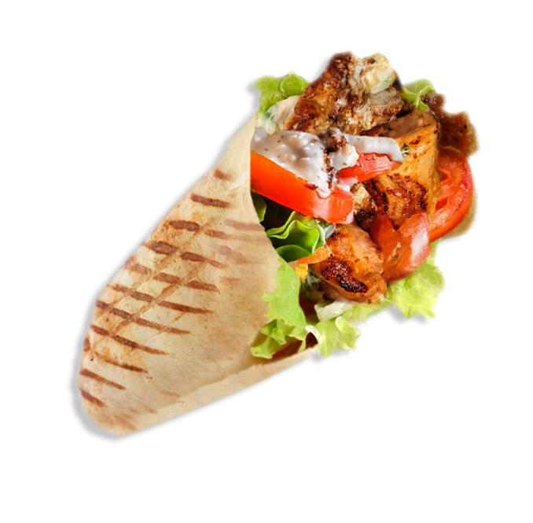
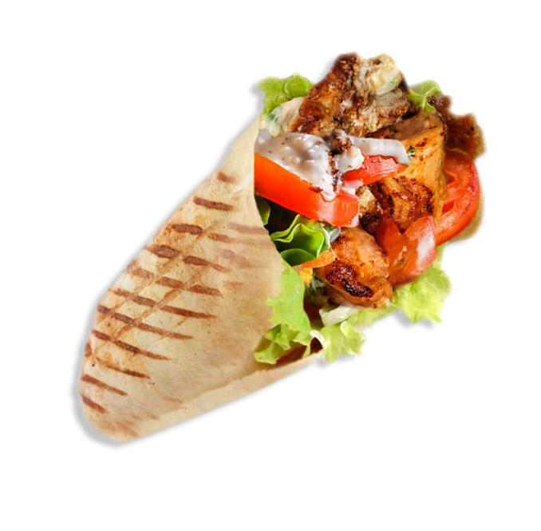

Degirmen
 

Турецкая шаурма или, как ее еще называют, донер кебаб — это уличная закуска с начинкой из свежих овощей, соуса и мяса полюбилась многим. Часто турецкий донер-кебаб называют шаурмой – это неправильно. Традиционная закуска в корне отличается от той, что мы привыкли видеть. Донер – лепёшка с мясом, соусом и овощами – был придуман турком Кадром Нурманом. Чтобы её было удобно есть на ходу, он адаптировал блюдо и оно приобрело форму рулета. Однако, классический донер – именно тонкая лепёшка. На неё накладывают большое количество говядины, баранины или куриного мяса, кусочки маринованного огурца, перца, свежих помидоров. Всё это заливается йогуртовым соусом. В него входит чеснок, приправы, свежий лимонный сок и винный уксус. Примечательно то, что кетчуп в рецепте донера-кебаба не фигурирует. Подают блюдо, просто обернув салфеткой, есть его нужно без столовых приборов, просто откусывая от края. Для шаурмы выбирается мясо — баранина, индюшатина, говядина, курятина, иногда свинина. Мясо поджаривается по специальной технологии в предназначенных для этого вертикальных грилях. Куски нанизываются на вертикально расположенный вертел, вращающийся вокруг своей оси и относительно нагревательных элементов, расположенных вдоль вертела. По мере поджаривания мяса его срезают при помощи длинного ножа (или специальным электрическим дисковым ножом) тонкими кусочками, которые падают в поддон. Эти кусочки затем дополнительно измельчаются. Вместе с мясом в начинку лаваша или питы добавляют соус (редко красный томатный и чаще всего белый чесночный из сметаны (йогурта) и свежего измельчённого чеснока (редко чесночный порошок)) и овощи (пекинский салат, помидоры и огурцы). После перемешивания всех ингредиентов лаваш заворачивают, шаурму немного подогревают (чаще всего), и она готова к употреблению.
Бесплатный донер
Состав идеального донера.
| 1.Мясо | Курица | Говядина |
| 2.Лаваш | Обычный | Сырный |
| 3.Овощи | Помидоры | Огурцы |
| 4.Соус | Острый | Классический |
| 5.Дополнительно | Сыр | Грибы |
| 6.Картошка | Фри | Чипсы |